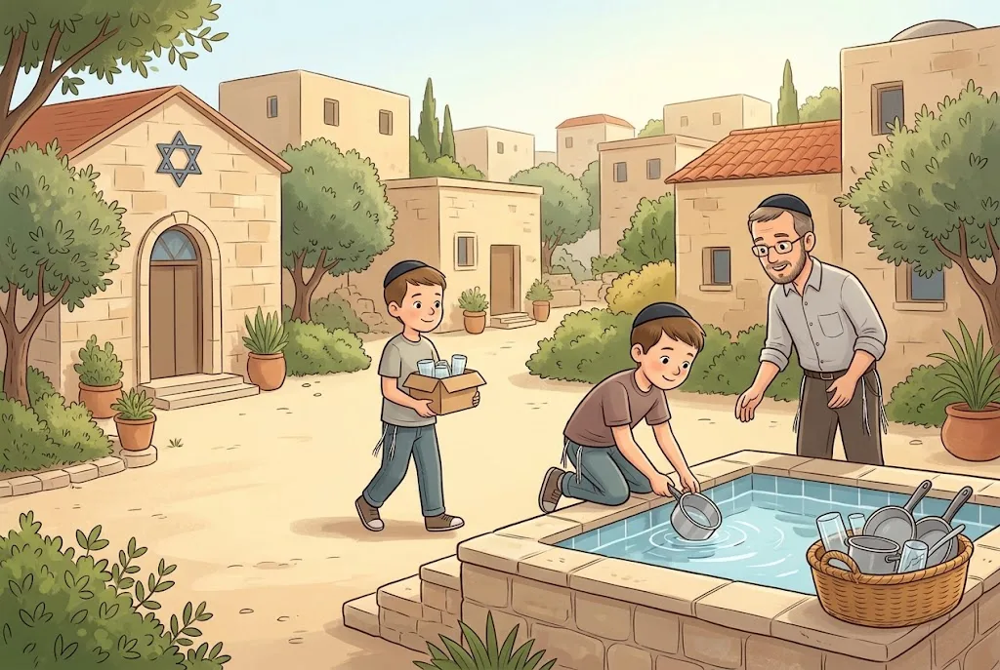
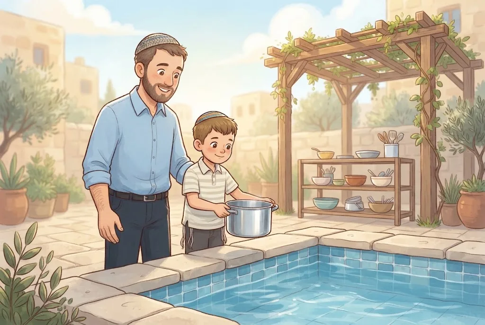

💧טְבִילַת כֵּלִים
כְּלִי אֹכֶל חָדָשׁ מִמַּתֶּכֶת אוֹ מִזְּכוּכִית, שֶׁהָיָה שַׁיָּךְ לְגוֹי, טוֹבְלִים בְּמִקְוֶה לִפְנֵי שֶׁמִּשְׁתַּמְּשִׁים בּוֹ. כֵּלִים מֵעֵץ, מִפְּלַסְטִיק, מֵחַרְסִינָה אוֹ מֵאֶבֶן – פְּטוּרִים מִטְּבִילָה. לָמַדְנוּ זֹאת מִן הַכֵּלִים שֶׁלָּקְחוּ בְּנֵי יִשְׂרָאֵל מִמִּדְיָן.
טוֹבְלִים כֵּלִים שֶׁאוֹכְלִים אוֹ מְבַשְּׁלִים בָּהֶם: צַלָּחוֹת, כּוֹסוֹת, סַכּוּ״ם, סִירִים וּמַחֲבַתּוֹת, וְגַם פּוּמְפִּיָּה וּקְלָפָן. פּוֹתְחָן קֻפְסָאוֹת, שֶׁלֹּא נוֹגֵעַ בָּאֹכֶל – פָּטוּר.
💛 אַהֲבַת הַשֵּׁם: הַטְּבִילָה מְרוֹמֶמֶת אֶת הַכְּלִי – מִכְּלִי שֶׁל סְתָם אֲכִילָה לִכְלִי שֶׁל אֲכִילָה בִּקְדֻשָּׁה. כָּךְ גַּם הָאֲרוּחָה שֶׁלָּנוּ מִתְחַבֶּרֶת לַתּוֹרָה וּלְבוֹרֵא הָעוֹלָם.
🏊אֵיךְ טוֹבְלִים
טוֹבְלִים בְּמִקְוֶה כָּשֵׁר, וְכָל הַכְּלִי – כּוֹלֵל הַיָּדִית – נִכְנָס לַמַּיִם בְּבַת אַחַת. לִפְנֵי כֵן מְסִירִים מַדְבֵּקַת מְחִיר וְכָל לִכְלוּךְ, כִּי הֵם חוֹצְצִים בֵּין הַכְּלִי לַמַּיִם. בִּזְמַן הַטְּבִילָה מַרְפִּים לְרֶגַע מֵהַכְּלִי, אוֹ מַרְטִיבִים קֹדֶם אֶת הַיָּד בְּמֵי הַמִּקְוֶה.
מְבָרְכִים "עַל טְבִילַת כֵּלִים", וְעַל כְּלִי אֶחָד – "עַל טְבִילַת כְּלִי". יֶלֶד רַשַּׁאי לִטְבֹּל וּלְבָרֵךְ, אֲבָל צָרִיךְ גָּדוֹל שֶׁיִּרְאֶה וְיָעִיד שֶׁהַטְּבִילָה נַעֲשְׂתָה כַּהֲלָכָה.
💛 אַהֲבַת הַשֵּׁם: כְּמוֹ גֵּר שֶׁטּוֹבֵל וְנִכְנָס לְעַם יִשְׂרָאֵל, כָּךְ הַכְּלִי עוֹלֶה לְמַדְרֵגָה חֲדָשָׁה. כָּל אֲרוּחָה בִּכְלִי טָבוּל הִיא מִצְוָה קְטַנָּה שֶׁמְּקָרֶבֶת אוֹתָנוּ לַה׳.
🧠 בְּדֹק אֶת עַצְמְךָ
אַבָּא שֶׁל נֹעַם הִגִּיעַ לַמִּקְוֶה עִם מַחֲבַת חֲדָשָׁה מִמַּתֶּכֶת. מָה צָרִיךְ לַעֲשׂוֹת?
💡 מַדְבֵּקָה שֶׁמְּסִירִים לִפְנֵי הַשִּׁמּוּשׁ חוֹצֶצֶת, וְהַכְּלִי כֻּלּוֹ – גַּם הַיָּדִית – צָרִיךְ לִהְיוֹת בַּמַּיִם בְּבַת אַחַת. וּמַרְפִּים לְרֶגַע מֵהַכְּלִי, כְּדֵי שֶׁהַיָּד לֹא תַּחֲצֹץ.
יוֹסֵף בֶּן תֵּשַׁע רוֹצֶה לִטְבֹּל לְבַד אֶת הַכֵּלִים הַחֲדָשִׁים שֶׁל הַמִּשְׁפָּחָה. מָה נָכוֹן?

💡 קָטָן רַשַּׁאי לִטְבֹּל וּלְבָרֵךְ, אֲבָל אֵינוֹ יָכוֹל לְהָעִיד שֶׁהַטְּבִילָה נַעֲשְׂתָה כַּהֲלָכָה. לָכֵן צָרִיךְ גָּדוֹל שֶׁיִּרְאֶה, וְאִם לֹא הָיָה גָּדוֹל – טוֹבְלִים שׁוּב.
📚 עוֹד חָמְרֵי לִמּוּד עַל הֲלָכָה – חִנָּם, בַּמַּאֲגָר הַקּוֹל הַחֲמִישִׁי:
kol-toda.co.il/halacha
הַמַּאֲגָר הַמָּלֵא: kol-toda.co.il
הַמַּאֲגָר הַמָּלֵא: kol-toda.co.il